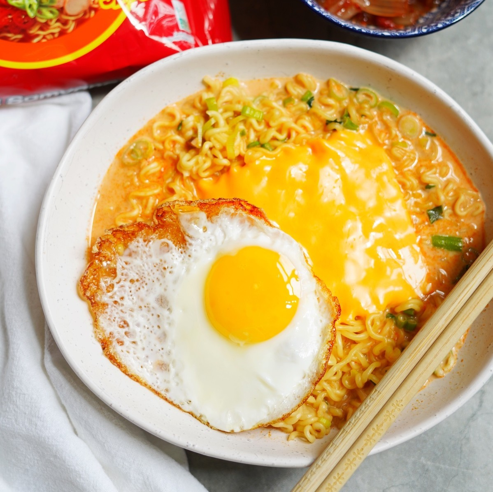

Spicy noodles with the creaminess and flavor of the cheese is probably one of the best inventions ever.
Whether it be in the winter or summer, spicy cheese ramen noodles will always taste great. It can be done like a soup or it could also be a pasta-like recipe, you decide.
Ingredients:
- A pack of instant spicy ramen. Non spicy instant ramen can also do the job.
- A slice (or two) of cheese. It could be american cheese or also cheddar cheese.
- Water according to package.
Optional ingredients:
- An egg.
- Shredded mozzarella cheese.
- Chopped scallions.
Steps:
- In a pot, bring the water to boil and prepare the noodles as usual.
- If adding the egg, fry it while the noodles are still cooking.
- When the noodles are done cooking, pour them in a bowl. If wanting a more pasta-like dish, remove some of the broth as preferred.
- Add the slice of preferred cheese, and the mozzarella cheese if desired. It should all melt on it's own.
- Slightly mix the cheese with the noodles and add the fried egg and scallions as toppings.
- Now all is left is to enjoy!
Go to Home Page.